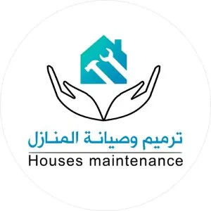

Building & renovating orphans' homes
A safe home for an orphan family starts with you
The Omani Bahjah Orphan Society maintains and renovates the homes of the families it supports, to give them a safer and more stable place to live.
- Non-governmental charity since 2014
- Donations via Bahjah's official website
- Payment through Bank Muscat SmartPay


Restoring walls and floors
From Bahjah's documented work
The work you support
What does your gift support?
Donations go through Bahjah's official "Building & Renovation" page, which Bahjah describes as: "Help us renovate and build orphans' homes."
-
Repairing deteriorated roofs
-
Restoring cracked walls
-
Preparing kitchens
-
Preparing bathrooms
-
Essential facilities and more
-
Building orphans' homes
Items from Bahjah's renovation campaign announcement (March 2026) and its description of the "Building & Renovation" donation page.
See the impact
Real results from Bahjah's work
Before and after photos of maintenance and renovation work carried out by Bahjah, as published in its official profile. Drag the handle to compare.
-
 Before After
Before After
Restoring a damaged room ceiling
-
 Before After
Before After
Repairing a deteriorated ceiling
-
 Before After
Before After
Repairing the roof
-
 Before After
Before After
Restoring walls and floors
-
 Before After
Before After
Renovating a bathroom
-
 Before After
Before After
Renewing the home's exterior
Photos from Bahjah's official profile (maintenance and renovation section). · View the profile
Why renovation?
Why renovate orphans' homes?
Bahjah began its maintenance and renovation work after Cyclone Mekunu in 2018: a specialist team visited homes, recorded cases and assessed the maintenance and renovation needed, then began the work.
Maintenance and renovation work continues throughout the year, and increases when Oman is affected by severe weather.
Source: Bahjah's official profile (maintenance and renovation) and the official campaign announcement
Renovating the homes of orphans and widows is not just repairing "concrete"; it is security for their hearts.
From your gift to the home
How does your gift reach the home?
-
1
You donate on the official website
Through the "Building & Renovation" page on Bahjah's website, paying via the Bank Muscat SmartPay gateway.
-
2
Home visits and case records
A specialist team from Bahjah visits the homes and records each case.
-
3
Assessing the work
The team assesses the damage and calculates the maintenance and renovation work needed.
-
4
The work is carried out
Maintenance and renovation work begins, and continues throughout the year.
Method as described in Bahjah's official profile (maintenance and renovation).
Documented record
Bahjah's documented work
-

March 2026
Campaign to renovate 10 homes of widows and orphans
During Ramadan (March 2026), Bahjah launched a campaign to renovate ten homes of orphan and widow families, including repairing deteriorated roofs, restoring cracked walls and preparing essential facilities such as kitchens and bathrooms.
A dated campaign; contact Bahjah to ask about its status.
Source (archived copy of Bahjah's website) -
Since 2018
Home renovation and maintenance
After Cyclone Mekunu, Bahjah's team visited homes, recorded cases, assessed the maintenance needed and carried it out. Bahjah also implemented the Minister of Social Development's recommendation to maintain 5 homes in Wilayat Mirbat.
-

A Bahjah project
Bahjah Residential Complex
A residential and commercial complex that provides housing for orphans, made up of four buildings with a garden and outdoor spaces.
Source (archived copy of Bahjah's website) -

Goal: 2040
Charity Buildings Administration
Bahjah aims to complete 10 charitable buildings by 2040 to ensure a sustainable income, and has completed the first building, thank God.
Source (archived copy of Bahjah's website)
How to give
How much should I give?
- 1Tap “Donate now to renovate orphans' homes”.
- 2On the official “بناء وترميم” (Building & Renovation) page, enter your amount in the “الكمية” (Quantity) field, then tap “تبرع الان” (Donate now).
- 3Complete payment by card through the Bank Muscat SmartPay gateway.
"Give, even if only one rial," as Bahjah's renovation campaign announcement puts it.
1,000 ر.ع.One Omani rial
The official payment page (in Arabic) shows rials with three decimal places (1,000 baisa). Type your gift in rials in the “الكمية” (Quantity) field.
Type an amount to see what to enter in the “الكمية” (Quantity) field.
You donate on Bahjah's official website, bahjah.org.om (in Arabic). Credit and debit card payments go through the Bank Muscat SmartPay gateway.
Source: the "Building & Renovation" page on Bahjah's website and the renovation campaign announcement.
More options
Other ways to donate
Bank transfer
- Bank Muscat 0397000008880035
- Bank Dhofar 01041328888001
Account name: Omani Bahjah Orphan Society (جمعية بهجة العمانية للأيتام)
To make sure a bank transfer is allocated to renovation, contact Bahjah after transferring.
Text message
Text the word “تبرع” to the toll-free number 90021 to donate 1 OMR to orphans (Omantel and Ooredoo).
Send the textSource: Bahjah's official renovation campaign announcement (March 2026).
Why Bahjah?
A trusted orphan-care society since 2014
Non-governmental charity
Omani Bahjah Orphan Society is classified as a non-governmental charitable association for orphans.
Founded 10 February 2014
Founded on 10/2/2014 in accordance with Royal Decree No. 14/2000.
Our vision
To provide care and assistance to orphans inside and outside their homes. Our goal is to give them hope for a secure future and better opportunities, so that every child in our care grows up psychologically and socially healthy, fully integrated in society.
Certificates and awards received by Bahjah
-
 ISO certification
2023
ISO certification
2023
-
 Sultan Qaboos Award for Voluntary Work
2013
Sultan Qaboos Award for Voluntary Work
2013
-
 Al Sanabel Award for Service Excellence in the GCC
2016
Al Sanabel Award for Service Excellence in the GCC
2016
-
 Honoured as best association by the Human Rights Commission
2019
Honoured as best association by the Human Rights Commission
2019
-
 First place in the Sultanate at the OQ level
2020
First place in the Sultanate at the OQ level
2020
-
 Distinguished International Institution Award for Social Innovation, Kingdom of Bahrain
2023
Distinguished International Institution Award for Social Innovation, Kingdom of Bahrain
2023
-
 Khalid Al-Essa Al-Saleh Award (Kuwait), Arab-world level
2024
Khalid Al-Essa Al-Saleh Award (Kuwait), Arab-world level
2024
As listed on Bahjah's official website.
FAQ
Everything you need to know
Where does my donation go?
Directly to the Omani Bahjah Orphan Society, through the "Building & Renovation" (بناء وترميم) page on its official website, which Bahjah describes as: "Help us renovate and build orphans' homes."
What exactly does this campaign support?
Maintaining, renovating and building orphan families' homes, including repairing deteriorated roofs, restoring cracked walls and preparing essential facilities such as kitchens and bathrooms. Bahjah's team decides the work needed after visiting and assessing each case.
Is the "10 homes" campaign still open?
That campaign was announced in March 2026. This page accepts donations for Bahjah's ongoing "Building & Renovation" fund. To ask about a specific campaign, please contact Bahjah directly.
How do I donate?
Tap "Donate now" to go to the "Building & Renovation" page on Bahjah's official website (in Arabic). It shows a unit value of "1,000 ر.ع.", which means one Omani rial, so type your amount in rials in the "الكمية" (Quantity) field (for example, 20 = twenty rials), then tap "تبرع الان" (Donate now) and complete payment.
Which payment methods are available?
According to the FAQ page on Bahjah's website: "We accept credit and debit cards through the Bank Muscat SmartPay gateway."
Are there other ways to contribute?
Yes. You can transfer to Bahjah's bank accounts, text the word "تبرع" to the toll-free number 90021 to donate 1 OMR (Omantel and Ooredoo), or donate through the Bahjah app. See "Other ways to donate" below.
How can I contact Bahjah?
Phone: 92877577 – 23289966 · WhatsApp: 92877577 · Email: bahjah1.omani@gmail.com · Address: Dhofar / Salalah East / 23 July Street / next to Bank Dhofar

Help give an orphan family a safe home
Whatever the amount, your gift goes to the "Building & Renovation" fund for orphans' homes at the Omani Bahjah Orphan Society.
You donate on Bahjah's official website, bahjah.org.om (in Arabic).